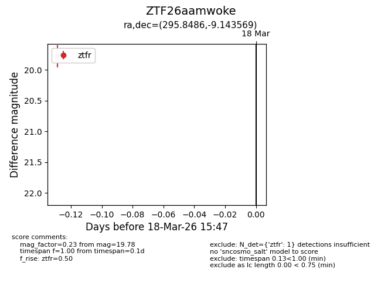
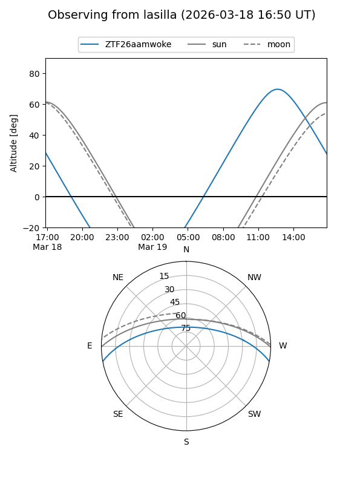
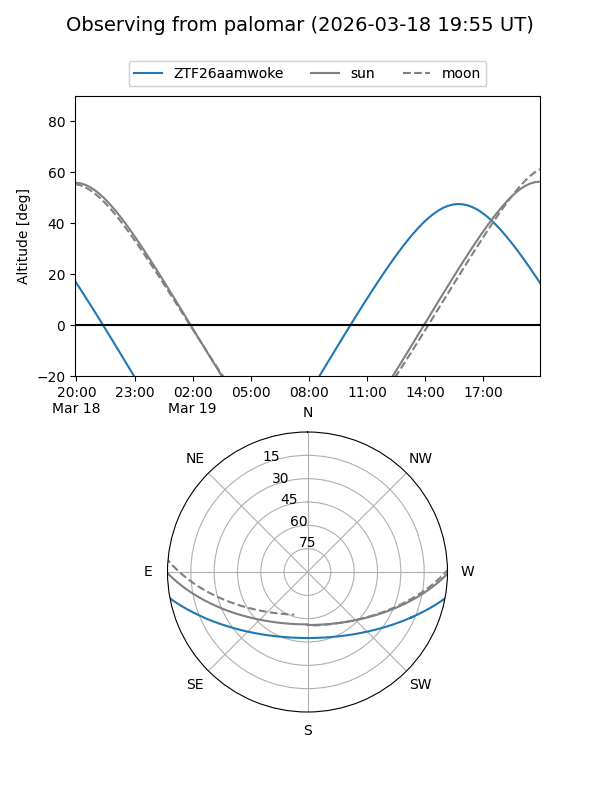
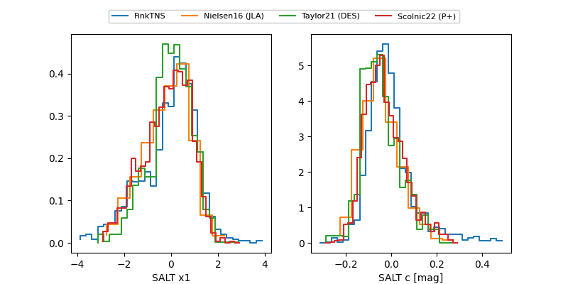

ZTF26aamwoke
Target ZTF26aamwoke at 2026-03-18 15:49
Aliases and brokers:
FINK: link
Lasair: link
ALeRCE: link
alt names
ZTF26aamwoke (ztf,fink_ztf)
Coordinates:
equatorial (ra, dec) = 295.8486,-9.14357
equatorial (HMS+DMS) = 19:43:23.65,-09:08:36.85
galactic (l, b) = (30.5367,-15.66167)
Flags:
Photometry:
last ztfr=19.78
1 ztfr detections
Lightcurve

Visibility


Additional plots
